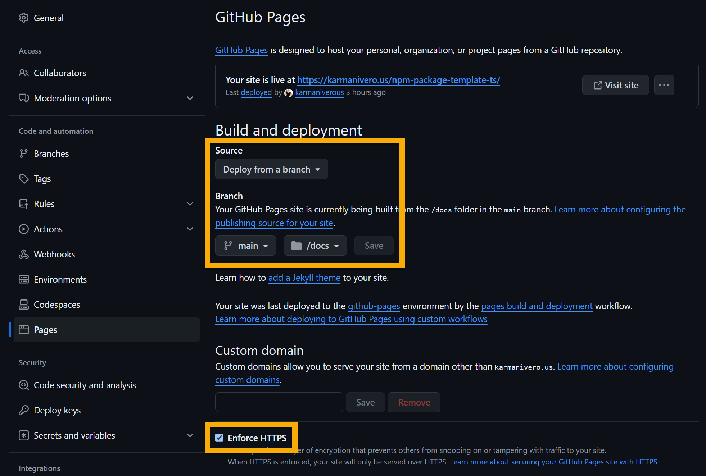

@karmaniverous/npm-package-template-ts
TypeScript NPM Package Template
👇 Some of these badges only activate when you publish your package!


Writing great TypeScript is only half the battle! You also need to instrument it, format it, lint it, test it, bundle it, document it, and publish it!
Getting all of these pieces to work gracefully together is not trivial.
This template puts those pieces together in a way that just WORKS, right out of the box, so you can focus on your code. It includes fully-configured support for:
✅ Code authoring with TypeScript.
✅ Inline documentation with TSDoc.
✅ CLI generation with Commander.
✅ Code formatting with Prettier.
✅ Linting with ESLint.
✅ Unit testing with Vitest.
✅ Package pruning with Knip.
✅ Bundling with Rollup.
✅ Publishing with ReleaseIt.
✅ Git hooks with Lefthook.
✅ API documentation generated by [TypeDoc].
✅ Recommended extensions & settings wherever appropriate.
Getting Started
Create a new repo using this template! When you clone it locally, be sure to run:
npm i # install dependencies
npx lefthook install # install Git hooks
Also, type @recommended into the VSCode Extensions sidebar and install the recommended extensions!
Change all repository & personal references in package.json & typedoc.json to reflect your own info.
Before your first commit, be sure to reset your project's version number (e.g. to 0.0.0) in package.json.
To streamline the release process from your desktop, set up a GitHub Personal Access Token and follow the instructions in .env.local.template.
Code Authoring
You want to write straight TS code without having to jump through weird hoops like adding a .js extension to your TS imports. (Click here to dive into that hole. 🙄)
Long story short: you can. Just write your code in the src directory and import it as you would any other module. The bundling process will take care of the rest.
Inline Documentation
This template uses TSDoc for inline documentation. TSDoc is similar to JSDoc, but is way less verbose as it can take advantage of TypeScript's type system. It also has better support for documenting generics and other TypeScript-specific features.
TSdoc comments are automatically included in your bundled code, so you can use them to document your code for IntelliSense in JavaScript as well as TypeScript.
The template also includes linting support for your TSDoc comments to keep you out of trouble. Just run npm run lint to check your comments along with the rest of your code, and be sure to check out the great TSDoc documentation for more details!
Also note that this template generates API Documentation with TypeDoc. The TypeDoc spec includes a few tags that TSDoc doesn't support. tsdoc.json specifies these extra tags and ensures you can use them in your code without generating ESLint warnings!
CLI Generation
This template uses Commander to generate a CLI for your package.
Given that your underlying library is solid, wrapping it into a CLI is fairly straightforward. Just follow these steps:
-
All of your CLI-specific code should live in the
src/clidirectory, but can import code from across your package as required. Each subdirectory here is the root of a CLI command. You can have as many as you want, but this template includes a single example calledmycli. -
The
index.tsfile in each named CLI subdirectory will be picked up by the bundler and compiled into a CLI command with the same name as the subdirectory. Sosrc/cli/mycli/index.tswill be compiled intodist/mycli.cli.mjs. -
The
binfield inpackage.jsonmust specifically reference each of these compiled CLI commands. On installation, you can then execute your CLI command like this:
> npx mycli # if installed localy
> mycli # if installed globally
# this is what you get...
Usage: mycli [options] [command]
My CLI tool
Options:
-h, --help display help for command
Commands:
foo [options] Foos your bar.
help [command] display help for command
Providing a detailed tutorial on Commander is really out of scope for this README, but this repo demonstrates a simple example with a single subcommand abstracted into a separate dependency.
You can build on this example to create a MUCH more complex CLI! See the Commander documentation for more details.
If your project requires an extensive, config-driven CLI, you might want to use my get-dotenv-child template instead!
Formatting
Code formatting is provided by Prettier.
Just run npm run lint to lint & format your code, or npm run lint:fix to resolve any issues automatically if possible.
The Prettier extension is included in the template's VSCode workspace recommendations, and the template contains related workspace settings, so be sure to install recommended extensions when prompted!
Linting
Linting services are provided by ESLint.
Just run npm run lint to lint your code, or npm run lint:fix to resolve any issues automatically if possible. These commands also run Prettier to identify & fix formatting issues.
The ESLint extension is included in the template's VSCode workspace recommendations, and the template contains related workspace settings, so be sure to install recommended extensions when prompted!
Unit Testing
Unit test support is provided by Vitest.
Any file containing .test. in its name (e.g. foo.test.ts) will be treated as a test file and executed by Vitest. See vitest.config.ts for configuration details.
Just run npm run test to execute your tests.
Test coverage reporting is provided by Vitest and runs every time you execute your tests. If you execute your tests from the command line, you will see a coverage report at the bottom of the run. You can also see a prettier version of this report by opening coverage/lcov-report/index.html in your browser.
The Vitest extension is a great way to execute & debug your Vitest tests! It's included in the template's VSCode workspace recommendations, and the template contains related workspace settings, so be sure to install recommended extensions when prompted!
Package Pruning
Knip is a great command-line tool that finds unused files, dependencies and exports in your TypeScript project. Less code and dependencies lead to improved performance, less maintenance and easier refactorings!
This template integrates Knip into your build process so you can prune your package at every release. Edit the config file to add any new cutouts, and run npm run knip to prune your package on demand!
Bundling
This template uses Rollup to bundle your code. See the References section for more detailed notes. It creates several kinds of outputs:
- ESM, for import into most TS/JS code.
- IIFE (Immediately Invoked Function Expression), for direct browser import.
- CJS, for lulz.
- Type definition files to support TypeScript imports and power IntelliSense in Javascript.
- CLI commands for execution from your command line. See the CLI Generation section for details. Don't forget to update the
binfield inpackage.json!
Type declarations are properly bundled and should be available no matter how your package is imported.
Just run npm run build to bundle your code, and the output will be in the dist directory.
See rollup.config.ts for details. If you don't need all of the output types listed above, it should be fairly straightforward to modify this file to suit your needs.
Incremental Build Warning
Incremental builds are turned on in this template. This will save you some build time, but @rollup/plugin-typescript will emit the following warning at build time:
(!) [plugin typescript] @rollup/plugin-typescript: outputToFilesystem option is defaulting to true.
This is a known issue and should have no negative effect on your build. If you can figure out how to suppress this warning, please submit a PR!
External Dependencies
rollup.config.ts is configured to treat all non-dev and peer dependencies listed in package.json as external dependencies. This means...
-
These dependencies will not be bundled into your package, but should be installed as a matter of course when you run
npm install. -
Your distribution files will be located in your dist directory as specified in your
package.jsonexports field (e.g.dist/mjs/index.js).
It is possible for external dependencies to creep into your build. For example, let's say you have a dev dependency that you referenced in runtime code, but is actually included as a runtime dependency by some other package. In this case...
-
the dependency would not be listed as an external dependency by
rollup.config.ts, and -
your distribution files would shift to
dist/mjs/src/index.js, breaking your package.
To prevent this, simply list the dependency as a regular dependency in your package.json file... which is exactly where it belongs anyway!
This will restore the structure of your build AND ensure proper tree-shaking of your dependencies.
Publishing
This template uses ReleaseIt to create a release on GitHub and publish your package to NPM.
Just run npm run release and the following will happen:
- ESLint will lint your code.
- Vitest will execute your tests and assess code coverage. Open
coverage/lcov-report/index.htmlto see the results. - Rollup will bundle your code.
- TypeDoc will generate & commit your API documentation.
- ReleaseIt will create a release on GitHub and publish your package to NPM.
To preserve Git Flow integrity, npm run release will only run on the main branch. It is often useful, though, to create a pre-release version from a feature branch. To do this, run npm run release:pre on any branch.
See the release-it section in package.json for details.
Validating Your Package
Use this awesome utility to validate that the types in your package are actually accessible in key target development environments.
Git Hooks
This template assumes you will be using something like Git Flow with a strong Git branch naming convention.
The template uses Lefthook to perform two services:
-
It will prevent you from committing to a branch with an invalid name. See the
branch-naming-policyscript for details. -
If your branch name begins with a standard-format issue number (e.g. GH-1) it will prefix your commit message with the issue number. This is a great way to keep your commits organized and linked to the issues they address! See the
add-issuescript for details.
To activate this functionality, be sure to run npx lefthook install after cloning the repository & installing dependencies!
API Documentation
This is really slick!
If you've been careful to document your code according to TSDoc conventions, then when you run npm run docs or npm run build, TypeDoc will generate API documentation, wrap it up with your README file, and publish it in browsable form to the docs directory of your repo.
You can alter the outcome by editing typedoc.json. See the TypeDoc options documentation for more info.
Update your repository's GitHub Pages settings as illustrated below, and this site will be published to <your GitHub username>.github.io/<your repo name>. You can also assign it a custom domain.

If you already have a custom domain set up for a GitHub Pages site at <your GitHub username>.github.io, this documentation will appear at <your custom domain>/<your repo name>.
For example, see https://docs.karmanivero.us/npm-package-template-ts.
Finally, note that this README file contains a link in the header to this documentation site that does NOT appear in the copy of the README on the documentation site's home page.
This is accomplished with the typedoc-plugin-replace-text TypeDoc plugin. It's already installed & configured in this template, and using it is really simple. Just enclose any Markdown you'd like to exclude from the documentation site in a pair of special Markdown comment tags like this:
Anything between these tags (as well as the tags themselves) will be excluded from the documentation site. Note that you can also use these tags to exclude content from your inline Typescript documenation!
Some tips:
- When TypeDoc finds a relative link in your README to an asset in your repo, it will copy that asset to the
mediadirectory of the documentation site. This is fine for images, but you probably want source code links to continue to point to the source code file in its original location. To accomplish this, just use the full URL to the file instead of a relative link.
Do you know how to restrict this behavior to certain file extensions? Start a discussion and let me know!
-
The organization of your documentation site mostly reflects the organization of your code. So make full use of the tags supported by TypeDoc!
-
I added convenient links in
typedoc.jsonto the project GitHub repository and my GitHub profile. You'll want to change these to reflect your own info.
Also note that this template generates API Documentation with TypeDoc. The TypeDoc spec includes a few tags that TSDoc doesn't support. tsdoc.json specifies these extra tags and ensures you can use them in your code without generating ESLint warnings!
References
-
TypeScript and NPM package.json exports the 2024 way. Note that this snippet is wrong; it should read the types may need to be
.d.cts. That's how this template is implemented. Also note that we're just using a second (and third)rolluptype declarations target instead of employing rollup-plugin-copy as suggested in the article.
Built for you with ❤️ on Bali! Find more great tools & templates on my GitHub Profile.